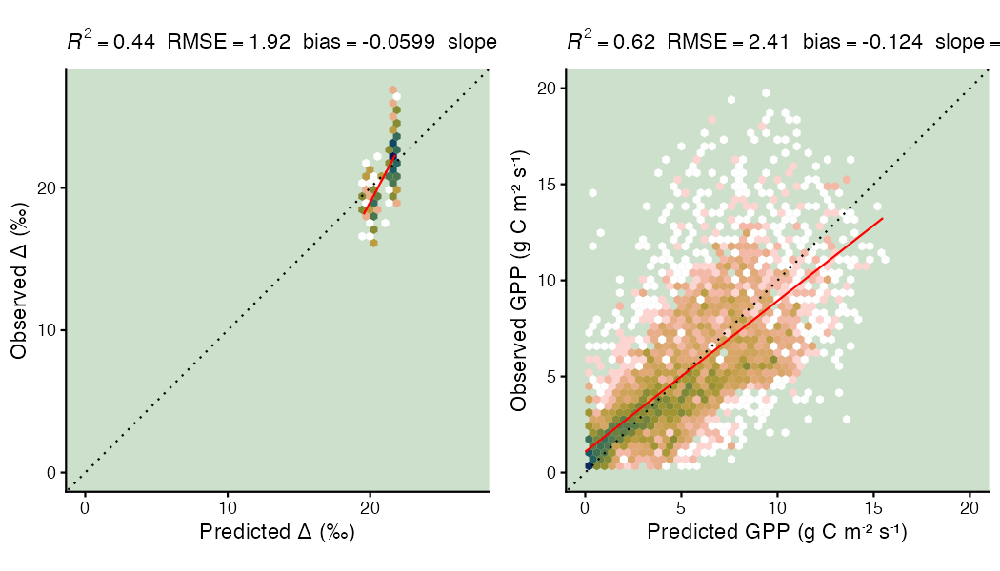

Parameter calibration (P-Model) to multiple targets (GPP, bigD13C)
Josefa Arán, Fabian Bernhard
Source:vignettes/param_calib_multitarget.Rmd
param_calib_multitarget.RmdThis vignette showcases a simplified version of the Bayesian
calibration to with a joint log-likelihood to multiple target variables
taken from the documentation paper Paredes et
al. (2025). The separate vignette ‘Parameter calibration (P-Model)
and cost functions’ (see vignette("new_cost_function"))
provides simpler examples.
You may be interested in calibrating the model to different target variables simultaneously, like flux and leaf trait measurements.
Calibrating one GPP and one D13C site
In this section we present an example, where we use
cost_likelihood_pmodel() to compute the joint likelihood of
all the targets specified (that is, by summing the log-likelihoods of
GPP and bigD13C) and ultimately calibrate the
beta_unitcostratio parameter. In the section after, we
calibrate another example to multiple sites.
# Define calibration settings for two targets
params_to_estimate <- list(
beta_unitcostratio = list(lower = 14.6, upper = 440, init = 146.0), # uniform priors
kc_jmax = list(lower = 0.2, upper = 0.8, init = 0.41), # uniform priors
err_gpp = list(lower = 0.001, upper = 4, init = 1),
err_bigD13C = list(lower = 0.01, upper = 3, init = 0.8))
params_fixed <- list( # fix parameter value from previous calibration
kphio = 0.041,
kphio_par_a = 0.0,
kphio_par_b = 16,
soilm_thetastar = 0.6 * 240, # to recover paper setup with soil moisture stress
soilm_betao = 0.01,
rd_to_vcmax = 0.014, # value from Atkin et al. 2015 for C3 herbaceous
tau_acclim = 30.0)
settings_joint_likelihood <- list(
method = "BayesianTools",
metric = rsofun::cost_likelihood_pmodel,
control = list(
sampler_runMCMC = "DREAMzs",
settings_runMCMC = list(
# burnin = 1500, # kept artificially low
# iterations = 3000,
burnin = 0,
iterations = 50, # kept artificially low
nrChains = 1
),
# optional parallelization
n_parallel_nrChains = 1 # 2, this can be parallelized
),
# parameters
par = params_to_estimate
)
# Run the calibration on the observational data of two sites
drivers <- pmodel_drivers |>
dplyr::filter(sitename %in% c("FR-Pue", "lon_+146.13_lat_-032.97"))
obs <- pmodel_validation |>
dplyr::filter(sitename %in% c("FR-Pue", "lon_+146.13_lat_-032.97"))
par_calib_join <- calib_sofun(
drivers = drivers,
obs = obs,
settings_calib = settings_joint_likelihood,
# arguments for the cost function
par_fixed = params_fixed
)Calibration with calib_sofun returns an object that
contains the maximum-a-posteriori (MAP) estimates of the parameters in
par and the full distribution of the parameters in the MCMC
chains in mod. Besides those it also reports additional
information.
par_calib_join
#> $par
#> beta_unitcostratio kc_jmax err_gpp err_bigD13C
#> 338.8871156 0.3435334 1.4141445 1.8159620
#>
#> $mod
#> [1] "mcmcSamplerList - you can use the following methods to summarize, plot or reduce this class:"
#> [1] plot print summary
#> see '?methods' for accessing help and source code
#>
#> $name
#> [1] "out_calib_my_calibration_name.rds.log.txt"
#>
#> $logpath
#> [1] ""
#>
#> $walltime
#> Time difference of 1.476193 secsNote that GPP predictions are directly compared to GPP observations
on that day, but the leaf trait bigD13C is predicted by the P-model as
“onestep” prediction for average conditions over the growing season and
compared to the (multiple) bigD13C observations taken across trees per
site. This is specified by the arguments drivers and
obs. Namely, it is specified by the column
params_siml$onestep within drivers, which can
be FALSE (for daily simulation) or TRUE (for
onestep acclimation), by the corresponding column forcing
containing daily or average conditions, and by the column
targets specified for each simulation site (i.e. each row
in drivers and obs).
For more details, unfold the code below or check the documentation of
pmodel_drivers and pmodel_validation.
# Note the columns: 'targets', and 'data' (containing observations)
pmodel_validation |> tidyr::unnest_wider(targets, names_sep = "_")
#> # A tibble: 20 × 4
#> sitename targets_1 targets_2 data
#> <chr> <chr> <chr> <list>
#> 1 CH-Dav gpp le <tibble [714 × 7]>
#> 2 CZ-BK1 gpp NA <tibble [479 × 7]>
#> 3 DK-Sor gpp NA <tibble [720 × 7]>
#> 4 FI-Hyy gpp NA <tibble [704 × 7]>
#> 5 FR-Pue gpp NA <tibble [1,924 × 7]>
#> 6 GF-Guy gpp NA <tibble [319 × 7]>
#> 7 US-Ha1 gpp NA <tibble [502 × 7]>
#> 8 US-PFa gpp NA <tibble [669 × 7]>
#> 9 lon_+010.52_lat_+051.08 bigD13C NA <tibble [8 × 2]>
#> 10 lon_+011.10_lat_+048.30 bigD13C NA <tibble [1 × 2]>
#> 11 lon_+112.58_lat_+023.13 bigD13C NA <tibble [94 × 2]>
#> 12 lon_+145.13_lat_-005.83 bigD13C NA <tibble [1 × 2]>
#> 13 lon_+146.13_lat_-032.97 bigD13C NA <tibble [19 × 2]>
#> 14 lon_+148.30_lat_-036.10 bigD13C NA <tibble [2 × 2]>
#> 15 lon_+153.00_lat_-026.85 bigD13C NA <tibble [25 × 2]>
#> 16 lon_-079.10_lat_+035.97 bigD13C NA <tibble [4 × 2]>
#> 17 lon_-116.45_lat_+047.16 bigD13C NA <tibble [18 × 2]>
#> 18 lon_-119.82_lat_+034.50 bigD13C NA <tibble [13 × 2]>
#> 19 lon_-122.98_lat_+038.40 bigD13C NA <tibble [1 × 2]>
#> 20 lon_-149.61_lat_+063.97 bigD13C NA <tibble [1 × 2]>
pmodel_validation |> dplyr::filter(grepl("lon", sitename)) |> tidyr::unnest(data)
#> # A tibble: 187 × 4
#> sitename targets id bigD13C
#> <chr> <list> <chr> <dbl>
#> 1 lon_+010.52_lat_+051.08 <chr [1]> 2001_Acer platanoides 19.4
#> 2 lon_+010.52_lat_+051.08 <chr [1]> 2001_Acer pseudoplatanus 19.7
#> 3 lon_+010.52_lat_+051.08 <chr [1]> 2001_Carpinus betulus 19.4
#> 4 lon_+010.52_lat_+051.08 <chr [1]> 2001_Fagus engleriana 19.5
#> 5 lon_+010.52_lat_+051.08 <chr [1]> 2001_Fraxinus excelsior 18.0
#> 6 lon_+010.52_lat_+051.08 <chr [1]> 2001_Quercus x mannifera 20.0
#> 7 lon_+010.52_lat_+051.08 <chr [1]> 2001_Tilia cordata 19.4
#> 8 lon_+010.52_lat_+051.08 <chr [1]> 2001_Tilia x europaea 18.2
#> 9 lon_+011.10_lat_+048.30 <chr [1]> 2002_Fagus engleriana 22.2
#> 10 lon_+112.58_lat_+023.13 <chr [1]> 1985_Adenosma glutinosa 22.8
#> # ℹ 177 more rows
pmodel_validation |> dplyr::filter(grepl("^[A-Z]", sitename)) |> tidyr::unnest(data)
#> # A tibble: 6,031 × 9
#> sitename targets date gpp gpp_qc nee nee_qc le le_qc
#> <chr> <list> <date> <dbl> <dbl> <dbl> <dbl> <dbl> <dbl>
#> 1 CH-Dav <chr [2]> 2007-01-01 0.855 1 1.44 1 9.49 1
#> 2 CH-Dav <chr [2]> 2007-01-02 -0.943 1 2.62 1 65.0 1
#> 3 CH-Dav <chr [2]> 2007-01-03 -0.951 1 2.39 1 48.6 1
#> 4 CH-Dav <chr [2]> 2007-01-04 1.23 0.979 0.958 0.979 14.7 1
#> 5 CH-Dav <chr [2]> 2007-01-05 1.36 1 0.992 1 37.5 1
#> 6 CH-Dav <chr [2]> 2007-01-06 1.67 1 1.02 1 31.4 1
#> 7 CH-Dav <chr [2]> 2007-01-07 2.27 0.979 0.575 0.979 16.9 1
#> 8 CH-Dav <chr [2]> 2007-01-08 2.00 1 0.854 1 21.5 1
#> 9 CH-Dav <chr [2]> 2007-01-09 1.20 0.979 1.53 0.979 24.6 1
#> 10 CH-Dav <chr [2]> 2007-01-10 0.732 0.958 1.72 0.958 28.3 1
#> # ℹ 6,021 more rows
pmodel_drivers |> dplyr::filter(grepl("lon", sitename)) |> tidyr::unnest(forcing)
#> # A tibble: 12 × 8
#> sitename params_siml site_info temp vpd ppfd co2 patm
#> <chr> <list> <list> <dbl> <dbl> <dbl> <dbl> <dbl>
#> 1 lon_+010.52_lat_+051.… <tibble> <tibble> 11.6 363. 2.61e-4 370. 9.75e4
#> 2 lon_+011.10_lat_+048.… <tibble> <tibble> 12.4 399. 2.99e-4 370. 9.53e4
#> 3 lon_+112.58_lat_+023.… <tibble> <tibble> 23.7 666. 3.27e-4 370. 9.92e4
#> 4 lon_+145.13_lat_-005.… <tibble> <tibble> 16.0 382. 3.46e-4 370. 7.29e4
#> 5 lon_+146.13_lat_-032.… <tibble> <tibble> 21.5 1231. 4.27e-4 370. 9.94e4
#> 6 lon_+148.30_lat_-036.… <tibble> <tibble> 10.7 384. 3.82e-4 370. 8.60e4
#> 7 lon_+153.00_lat_-026.… <tibble> <tibble> 23.6 813. 4.28e-4 370. 1.01e5
#> 8 lon_-079.10_lat_+035.… <tibble> <tibble> 19.0 762. 3.58e-4 370. 9.94e4
#> 9 lon_-116.45_lat_+047.… <tibble> <tibble> 14.3 696. 3.85e-4 370. 9.16e4
#> 10 lon_-119.82_lat_+034.… <tibble> <tibble> 18.3 818. 4.23e-4 370. 9.43e4
#> 11 lon_-122.98_lat_+038.… <tibble> <tibble> 17.1 651. 3.84e-4 370. 9.81e4
#> 12 lon_-149.61_lat_+063.… <tibble> <tibble> 10.9 495. 3.24e-4 370. 9.27e4
pmodel_drivers |> dplyr::filter(grepl("^[A-Z]", sitename)) |> tidyr::unnest(forcing)
#> # A tibble: 7,300 × 17
#> sitename params_siml site_info date temp vpd ppfd netrad
#> <chr> <list> <list> <date> <dbl> <dbl> <dbl> <dbl>
#> 1 CH-Dav <tibble [1 × 12]> <tibble> 2007-01-01 2.87 234. 4.26e-5 -28.0
#> 2 CH-Dav <tibble [1 × 12]> <tibble> 2007-01-02 -4.67 110. 6.21e-5 -0.394
#> 3 CH-Dav <tibble [1 × 12]> <tibble> 2007-01-03 -3.67 101. 9.80e-5 -7.05
#> 4 CH-Dav <tibble [1 × 12]> <tibble> 2007-01-04 0.463 45.1 7.24e-5 -0.0927
#> 5 CH-Dav <tibble [1 × 12]> <tibble> 2007-01-05 -1.30 95.3 1.55e-4 23.4
#> 6 CH-Dav <tibble [1 × 12]> <tibble> 2007-01-06 0.982 149. 1.50e-4 -21.3
#> 7 CH-Dav <tibble [1 × 12]> <tibble> 2007-01-07 2.01 149. 1.52e-4 -15.4
#> 8 CH-Dav <tibble [1 × 12]> <tibble> 2007-01-08 2.05 270. 1.22e-4 -26.7
#> 9 CH-Dav <tibble [1 × 12]> <tibble> 2007-01-09 2.21 20.9 6.22e-5 6.76
#> 10 CH-Dav <tibble [1 × 12]> <tibble> 2007-01-10 6.19 237. 1.57e-4 -37.7
#> # ℹ 7,290 more rows
#> # ℹ 9 more variables: patm <dbl>, snow <dbl>, rain <dbl>, tmin <dbl>,
#> # tmax <dbl>, wind <dbl>, fapar <dbl>, co2 <dbl>, ccov <dbl>
pmodel_drivers |> dplyr::filter(grepl("lon", sitename)) |> tidyr::unnest(params_siml)
#> # A tibble: 12 × 5
#> sitename lc4 onestep site_info forcing
#> <chr> <lgl> <lgl> <list> <list>
#> 1 lon_+010.52_lat_+051.08 FALSE TRUE <tibble [1 × 4]> <tibble [1 × 5]>
#> 2 lon_+011.10_lat_+048.30 FALSE TRUE <tibble [1 × 4]> <tibble [1 × 5]>
#> 3 lon_+112.58_lat_+023.13 FALSE TRUE <tibble [1 × 4]> <tibble [1 × 5]>
#> 4 lon_+145.13_lat_-005.83 FALSE TRUE <tibble [1 × 4]> <tibble [1 × 5]>
#> 5 lon_+146.13_lat_-032.97 FALSE TRUE <tibble [1 × 4]> <tibble [1 × 5]>
#> 6 lon_+148.30_lat_-036.10 FALSE TRUE <tibble [1 × 4]> <tibble [1 × 5]>
#> 7 lon_+153.00_lat_-026.85 FALSE TRUE <tibble [1 × 4]> <tibble [1 × 5]>
#> 8 lon_-079.10_lat_+035.97 FALSE TRUE <tibble [1 × 4]> <tibble [1 × 5]>
#> 9 lon_-116.45_lat_+047.16 FALSE TRUE <tibble [1 × 4]> <tibble [1 × 5]>
#> 10 lon_-119.82_lat_+034.50 FALSE TRUE <tibble [1 × 4]> <tibble [1 × 5]>
#> 11 lon_-122.98_lat_+038.40 FALSE TRUE <tibble [1 × 4]> <tibble [1 × 5]>
#> 12 lon_-149.61_lat_+063.97 FALSE TRUE <tibble [1 × 4]> <tibble [1 × 5]>
pmodel_drivers |> dplyr::filter(grepl("^[A-Z]", sitename)) |> tidyr::unnest(params_siml)
#> # A tibble: 8 × 15
#> sitename spinup spinupyears recycle outdt ltre ltne ltrd ltnd lgr3 lgn3
#> <chr> <lgl> <dbl> <dbl> <dbl> <lgl> <lgl> <lgl> <lgl> <lgl> <lgl>
#> 1 CH-Dav TRUE 10 1 1 FALSE FALSE FALSE FALSE TRUE FALSE
#> 2 CZ-BK1 TRUE 10 1 1 FALSE FALSE FALSE FALSE TRUE FALSE
#> 3 DK-Sor TRUE 10 1 1 FALSE FALSE FALSE FALSE TRUE FALSE
#> 4 FI-Hyy TRUE 10 1 1 FALSE FALSE FALSE FALSE TRUE FALSE
#> 5 FR-Pue TRUE 10 1 1 FALSE FALSE FALSE FALSE TRUE FALSE
#> 6 GF-Guy TRUE 10 1 1 FALSE FALSE FALSE FALSE TRUE FALSE
#> 7 US-Ha1 TRUE 10 1 1 FALSE FALSE FALSE FALSE TRUE FALSE
#> 8 US-PFa TRUE 10 1 1 FALSE FALSE FALSE FALSE TRUE FALSE
#> # ℹ 4 more variables: lgr4 <lgl>, onestep <lgl>, site_info <list>,
#> # forcing <list>Calibrating multiple GPP and D13C sites
Some helper functions for calibration
Below we define some helper functions to facilitate model calibration with different target variables, resulting thus in different calibration setups. These helper functions simplify the use of parallel execution and avoid code repetition.
Here, we showcase two different setups. The first setup uses only
D13C as target variable (corresponds to Setup S1 in the documentation
paper). The second setup uses D13C and GPP as calibration targets and
(truncated) normal priors for the parameters (Setup S6). In below code,
we define first these two different calibration setups by specifying the
function setup_rsofun_calibration(), that returns an object
with the necessary specifications.
These specifications can differ in the selection of calibration
parameters and priors, in the data used and potentially in the
test-train split. Here, setups are uniquely identified with a numeric
identifer. Below code defines setup_rsofun_calibration()
for setups 226 and 231.
# 226: Setup c) Delta^'13 C*',VJ
# 231: Setup h) Delta^'13 C*',VJ, GPP
setup_rsofun_calibration <- function(scenario) {
## Load forcing and targets data from disk (here now from package) ----
bigD13C_vj_gpp_drivers <- rsofun::pmodel_drivers
bigD13C_vj_gpp_obs <- rsofun::pmodel_validation
# ## Read test-train split from disk ----
# read_csv(here::here("data/01_test_train_split.csv"))
# Not needed here for vignette
## Preprocess observation data (gpp) ----
## # no additinal QC needed
## Apply test-train split to data ----
train_drivers <- bigD13C_vj_gpp_drivers
train_obs <- bigD13C_vj_gpp_obs
test_drivers <- bigD13C_vj_gpp_drivers |> slice(0)
test_obs <- bigD13C_vj_gpp_obs |> slice(0)
## Setup the settings for the different calibration scenarios ----
## Define default parameter
default_par_fixed <- list( # fix parameter value from previous calibration
kphio = 0.04998, # value from Stocker et al. 2020
kphio_par_a = 0.0, # 0 corresponds to no temperature dependency of kphio (ORG setup in Stocker et al. 2020)
kphio_par_b = 1.0, #
soilm_thetastar = 0.6 * 240, # to recover paper setup with soil moisture stress
soilm_betao = 0.01, # 1 corresponds to no reduction, 0 to full reduction at theta==0
beta_unitcostratio = 146.0, # value from Stocker et al. 2020
rd_to_vcmax = 0.014, # value from Atkin et al. 2015 for C3 herbaceous
tau_acclim = 14.0, # value from Liu et al. 2024
kc_jmax = 0.41 # value from Stocker et al. 2024 (citing Wang et al. 2017)
)
## Define parameters to estimate and their priors
if (scenario %in% c(223, 226, 231)) { # 231 is like 223 but using posteriors from 226
par_to_estimate <- list(
kphio = list(lower = 0.02, upper = 0.15, init = 0.05),
kphio_par_a = list(lower = -0.004, upper = -0.001, init = -0.0025),
kphio_par_b = list(lower = 10, upper = 30, init = 20),
soilm_thetastar = list(lower = 1, upper = 250, init = 40),
beta_unitcostratio = as.list(c(lower = 0.1, upper = 3.0, init = 1.0) * 146.0),
# truncated normal, with ~14 days as mean, taken from Liu et al.
# 2024, Nat.Plants and Mäkelä et al. 2004, Tree Phys.
tau_acclim = list(mean = 14, sd = 8, lower = 0.01, upper = 40),
kc_jmax = as.list(0.41 * c(lower = 0.1, upper = 3.0, init = 1.0)),
err_gpp = list(lower = 0.01, upper = 3, init = 0.8),
err_bigD13C = list(lower = 0.01, upper = 3, init = 0.8)
)
if (scenario %in% c(223, 226, 231)) {
par_to_estimate$err_bigD13C <- list(lower = 0.01, upper = 15, init = 0.8)
}
} else {
stop(sprintf("Unsupported scenario: %d", scenario))
}
if (scenario %in% c(231)) { # 231 is like 223 but using posteriors from 226
# for beta_unitcostratio and kc_jmax as priors
# Below was done iteratively
# calib_scen226 <- readr::read_rds(file.path(rsofun_doc_output_path, "data","calibrations","out_calib__scen226_DREAMzs-100000-0iter_8x3chains_on_CPU8x1_continued.rds"))
# # i) extract samples as a data.frame
# burnins_scen226 <- 30000
# samples_scen226 <- getSample(calib_scen226$mod, thin = 1, start = burnins_scen226) %>% as.data.frame()
#
# # ii) fit normal and lognormal distributions for each parameter
# param_normals_scen226 <- lapply(setNames(names(samples_scen226), names(samples_scen226)), function(p) {
# list(mean = mean(samples_scen226[[p]]),
# sd = sd( samples_scen226[[p]]))
# })[c('beta_unitcostratio', 'kc_jmax')] # only keep these
#
# # then pass on these as prior for these
# par_to_estimate$beta_unitcostratio <- param_normals_scen226$beta_unitcostratio
# par_to_estimate$kc_jmax <- param_normals_scen226$kc_jmax
par_to_estimate$beta_unitcostratio <- list(mean = 207.86, sd = 6.79)
par_to_estimate$kc_jmax <- list(mean = 0.4244, sd = 0.0217)
if (scenario %in% c(231)) {
# truncated normal:
par_to_estimate$beta_unitcostratio <- list(mean = 207.86, sd = 6.79,
lower = 207.86 - 3 * 6.79,
upper = 207.86 + 3 * 6.79)
# normal:
par_to_estimate$kc_jmax <- list(mean = 0.4244, sd = 0.0217)
}
}
# Remove parameters that are defined to be estimated from default_par_fixed
par_to_fix <- default_par_fixed[!(names(default_par_fixed) %in% names(par_to_estimate))]
## Setup the data (drivers and obs) for the three calibration scenarios ----
# Subset different combination sites to dfeine target variables.
# For easier handling do this in combined drivobs-object.
drivobs_train_bigD13C_vj_gpp <- dplyr::inner_join(
train_drivers,
train_obs,
by = join_by(sitename))
drivobs_test_bigD13C_vj_gpp <- dplyr::inner_join(
test_drivers,
test_obs,
by = join_by(sitename))
all_potential_targets <- unique(unlist(drivobs_train_bigD13C_vj_gpp$targets))
if (scenario %in% c(223, 224, 225, 229, 230, 231)) { # GPP and traits data
targets_to_keep <- c("gpp", "bigD13C")
} else if (scenario %in% c(226)) { # only traits data, either both, or vj only, or bigD13C only
targets_to_keep <- c("bigD13C")
# } else if (scenario %in% c(220)) { # only GPP data from FR-Pue
# targets_to_keep <- c("gpp")
# sites_to_keep <- "FR-Pue"
} else {
stop(sprintf("Unsupported scenario: %d", scenario))
}
stopifnot(all(targets_to_keep %in% all_potential_targets))
drivobs_train <- drivobs_train_bigD13C_vj_gpp |>
# keep only sites with targets we want
dplyr::rowwise() |> dplyr::filter(any(targets_to_keep %in% .data$targets)) |> dplyr::ungroup() |>
# remove other unwanted target specifications from sites we keep (e.g. ET observations for a site with GPP and ET)
dplyr::mutate(targets = list(intersect(targets, targets_to_keep))) |> dplyr::ungroup()
drivobs_test <- drivobs_test_bigD13C_vj_gpp ## for the test data set keep all
## return ---
return(list(
drivobs_train = drivobs_train,
drivobs_test = drivobs_test,
par_fixed = par_to_fix,
par = par_to_estimate
))
}
setup_rsofun_calibration(226)
#> $drivobs_train
#> # A tibble: 12 × 6
#> sitename params_siml site_info forcing targets data
#> <chr> <list> <list> <list> <list> <list>
#> 1 lon_+010.52_lat_+051.08 <tibble [1 × 2]> <tibble> <tibble> <list> <tibble>
#> 2 lon_+011.10_lat_+048.30 <tibble [1 × 2]> <tibble> <tibble> <list> <tibble>
#> 3 lon_+112.58_lat_+023.13 <tibble [1 × 2]> <tibble> <tibble> <list> <tibble>
#> 4 lon_+145.13_lat_-005.83 <tibble [1 × 2]> <tibble> <tibble> <list> <tibble>
#> 5 lon_+146.13_lat_-032.97 <tibble [1 × 2]> <tibble> <tibble> <list> <tibble>
#> 6 lon_+148.30_lat_-036.10 <tibble [1 × 2]> <tibble> <tibble> <list> <tibble>
#> 7 lon_+153.00_lat_-026.85 <tibble [1 × 2]> <tibble> <tibble> <list> <tibble>
#> 8 lon_-079.10_lat_+035.97 <tibble [1 × 2]> <tibble> <tibble> <list> <tibble>
#> 9 lon_-116.45_lat_+047.16 <tibble [1 × 2]> <tibble> <tibble> <list> <tibble>
#> 10 lon_-119.82_lat_+034.50 <tibble [1 × 2]> <tibble> <tibble> <list> <tibble>
#> 11 lon_-122.98_lat_+038.40 <tibble [1 × 2]> <tibble> <tibble> <list> <tibble>
#> 12 lon_-149.61_lat_+063.97 <tibble [1 × 2]> <tibble> <tibble> <list> <tibble>
#>
#> $drivobs_test
#> # A tibble: 0 × 6
#> # ℹ 6 variables: sitename <chr>, params_siml <list>, site_info <list>,
#> # forcing <list>, targets <list>, data <list>
#>
#> $par_fixed
#> $par_fixed$soilm_betao
#> [1] 0.01
#>
#> $par_fixed$rd_to_vcmax
#> [1] 0.014
#>
#>
#> $par
#> $par$kphio
#> $par$kphio$lower
#> [1] 0.02
#>
#> $par$kphio$upper
#> [1] 0.15
#>
#> $par$kphio$init
#> [1] 0.05
#>
#>
#> $par$kphio_par_a
#> $par$kphio_par_a$lower
#> [1] -0.004
#>
#> $par$kphio_par_a$upper
#> [1] -0.001
#>
#> $par$kphio_par_a$init
#> [1] -0.0025
#>
#>
#> $par$kphio_par_b
#> $par$kphio_par_b$lower
#> [1] 10
#>
#> $par$kphio_par_b$upper
#> [1] 30
#>
#> $par$kphio_par_b$init
#> [1] 20
#>
#>
#> $par$soilm_thetastar
#> $par$soilm_thetastar$lower
#> [1] 1
#>
#> $par$soilm_thetastar$upper
#> [1] 250
#>
#> $par$soilm_thetastar$init
#> [1] 40
#>
#>
#> $par$beta_unitcostratio
#> $par$beta_unitcostratio$lower
#> [1] 14.6
#>
#> $par$beta_unitcostratio$upper
#> [1] 438
#>
#> $par$beta_unitcostratio$init
#> [1] 146
#>
#>
#> $par$tau_acclim
#> $par$tau_acclim$mean
#> [1] 14
#>
#> $par$tau_acclim$sd
#> [1] 8
#>
#> $par$tau_acclim$lower
#> [1] 0.01
#>
#> $par$tau_acclim$upper
#> [1] 40
#>
#>
#> $par$kc_jmax
#> $par$kc_jmax$lower
#> [1] 0.041
#>
#> $par$kc_jmax$upper
#> [1] 1.23
#>
#> $par$kc_jmax$init
#> [1] 0.41
#>
#>
#> $par$err_gpp
#> $par$err_gpp$lower
#> [1] 0.01
#>
#> $par$err_gpp$upper
#> [1] 3
#>
#> $par$err_gpp$init
#> [1] 0.8
#>
#>
#> $par$err_bigD13C
#> $par$err_bigD13C$lower
#> [1] 0.01
#>
#> $par$err_bigD13C$upper
#> [1] 15
#>
#> $par$err_bigD13C$init
#> [1] 0.8
setup_rsofun_calibration(226)$drivobs_train
#> # A tibble: 12 × 6
#> sitename params_siml site_info forcing targets data
#> <chr> <list> <list> <list> <list> <list>
#> 1 lon_+010.52_lat_+051.08 <tibble [1 × 2]> <tibble> <tibble> <list> <tibble>
#> 2 lon_+011.10_lat_+048.30 <tibble [1 × 2]> <tibble> <tibble> <list> <tibble>
#> 3 lon_+112.58_lat_+023.13 <tibble [1 × 2]> <tibble> <tibble> <list> <tibble>
#> 4 lon_+145.13_lat_-005.83 <tibble [1 × 2]> <tibble> <tibble> <list> <tibble>
#> 5 lon_+146.13_lat_-032.97 <tibble [1 × 2]> <tibble> <tibble> <list> <tibble>
#> 6 lon_+148.30_lat_-036.10 <tibble [1 × 2]> <tibble> <tibble> <list> <tibble>
#> 7 lon_+153.00_lat_-026.85 <tibble [1 × 2]> <tibble> <tibble> <list> <tibble>
#> 8 lon_-079.10_lat_+035.97 <tibble [1 × 2]> <tibble> <tibble> <list> <tibble>
#> 9 lon_-116.45_lat_+047.16 <tibble [1 × 2]> <tibble> <tibble> <list> <tibble>
#> 10 lon_-119.82_lat_+034.50 <tibble [1 × 2]> <tibble> <tibble> <list> <tibble>
#> 11 lon_-122.98_lat_+038.40 <tibble [1 × 2]> <tibble> <tibble> <list> <tibble>
#> 12 lon_-149.61_lat_+063.97 <tibble [1 × 2]> <tibble> <tibble> <list> <tibble>
setup_rsofun_calibration(231)
#> $drivobs_train
#> # A tibble: 20 × 6
#> sitename params_siml site_info forcing targets data
#> <chr> <list> <list> <list> <list> <list>
#> 1 CH-Dav <tibble [1 × 12]> <tibble> <tibble> <list> <tibble>
#> 2 CZ-BK1 <tibble [1 × 12]> <tibble> <tibble> <list> <tibble>
#> 3 DK-Sor <tibble [1 × 12]> <tibble> <tibble> <list> <tibble>
#> 4 FI-Hyy <tibble [1 × 12]> <tibble> <tibble> <list> <tibble>
#> 5 FR-Pue <tibble [1 × 12]> <tibble> <tibble> <list> <tibble>
#> 6 GF-Guy <tibble [1 × 12]> <tibble> <tibble> <list> <tibble>
#> 7 US-Ha1 <tibble [1 × 12]> <tibble> <tibble> <list> <tibble>
#> 8 US-PFa <tibble [1 × 12]> <tibble> <tibble> <list> <tibble>
#> 9 lon_+010.52_lat_+051.08 <tibble [1 × 2]> <tibble> <tibble> <list> <tibble>
#> 10 lon_+011.10_lat_+048.30 <tibble [1 × 2]> <tibble> <tibble> <list> <tibble>
#> 11 lon_+112.58_lat_+023.13 <tibble [1 × 2]> <tibble> <tibble> <list> <tibble>
#> 12 lon_+145.13_lat_-005.83 <tibble [1 × 2]> <tibble> <tibble> <list> <tibble>
#> 13 lon_+146.13_lat_-032.97 <tibble [1 × 2]> <tibble> <tibble> <list> <tibble>
#> 14 lon_+148.30_lat_-036.10 <tibble [1 × 2]> <tibble> <tibble> <list> <tibble>
#> 15 lon_+153.00_lat_-026.85 <tibble [1 × 2]> <tibble> <tibble> <list> <tibble>
#> 16 lon_-079.10_lat_+035.97 <tibble [1 × 2]> <tibble> <tibble> <list> <tibble>
#> 17 lon_-116.45_lat_+047.16 <tibble [1 × 2]> <tibble> <tibble> <list> <tibble>
#> 18 lon_-119.82_lat_+034.50 <tibble [1 × 2]> <tibble> <tibble> <list> <tibble>
#> 19 lon_-122.98_lat_+038.40 <tibble [1 × 2]> <tibble> <tibble> <list> <tibble>
#> 20 lon_-149.61_lat_+063.97 <tibble [1 × 2]> <tibble> <tibble> <list> <tibble>
#>
#> $drivobs_test
#> # A tibble: 0 × 6
#> # ℹ 6 variables: sitename <chr>, params_siml <list>, site_info <list>,
#> # forcing <list>, targets <list>, data <list>
#>
#> $par_fixed
#> $par_fixed$soilm_betao
#> [1] 0.01
#>
#> $par_fixed$rd_to_vcmax
#> [1] 0.014
#>
#>
#> $par
#> $par$kphio
#> $par$kphio$lower
#> [1] 0.02
#>
#> $par$kphio$upper
#> [1] 0.15
#>
#> $par$kphio$init
#> [1] 0.05
#>
#>
#> $par$kphio_par_a
#> $par$kphio_par_a$lower
#> [1] -0.004
#>
#> $par$kphio_par_a$upper
#> [1] -0.001
#>
#> $par$kphio_par_a$init
#> [1] -0.0025
#>
#>
#> $par$kphio_par_b
#> $par$kphio_par_b$lower
#> [1] 10
#>
#> $par$kphio_par_b$upper
#> [1] 30
#>
#> $par$kphio_par_b$init
#> [1] 20
#>
#>
#> $par$soilm_thetastar
#> $par$soilm_thetastar$lower
#> [1] 1
#>
#> $par$soilm_thetastar$upper
#> [1] 250
#>
#> $par$soilm_thetastar$init
#> [1] 40
#>
#>
#> $par$beta_unitcostratio
#> $par$beta_unitcostratio$mean
#> [1] 207.86
#>
#> $par$beta_unitcostratio$sd
#> [1] 6.79
#>
#> $par$beta_unitcostratio$lower
#> [1] 187.49
#>
#> $par$beta_unitcostratio$upper
#> [1] 228.23
#>
#>
#> $par$tau_acclim
#> $par$tau_acclim$mean
#> [1] 14
#>
#> $par$tau_acclim$sd
#> [1] 8
#>
#> $par$tau_acclim$lower
#> [1] 0.01
#>
#> $par$tau_acclim$upper
#> [1] 40
#>
#>
#> $par$kc_jmax
#> $par$kc_jmax$mean
#> [1] 0.4244
#>
#> $par$kc_jmax$sd
#> [1] 0.0217
#>
#>
#> $par$err_gpp
#> $par$err_gpp$lower
#> [1] 0.01
#>
#> $par$err_gpp$upper
#> [1] 3
#>
#> $par$err_gpp$init
#> [1] 0.8
#>
#>
#> $par$err_bigD13C
#> $par$err_bigD13C$lower
#> [1] 0.01
#>
#> $par$err_bigD13C$upper
#> [1] 15
#>
#> $par$err_bigD13C$init
#> [1] 0.8
setup_rsofun_calibration(231)$drivobs_train
#> # A tibble: 20 × 6
#> sitename params_siml site_info forcing targets data
#> <chr> <list> <list> <list> <list> <list>
#> 1 CH-Dav <tibble [1 × 12]> <tibble> <tibble> <list> <tibble>
#> 2 CZ-BK1 <tibble [1 × 12]> <tibble> <tibble> <list> <tibble>
#> 3 DK-Sor <tibble [1 × 12]> <tibble> <tibble> <list> <tibble>
#> 4 FI-Hyy <tibble [1 × 12]> <tibble> <tibble> <list> <tibble>
#> 5 FR-Pue <tibble [1 × 12]> <tibble> <tibble> <list> <tibble>
#> 6 GF-Guy <tibble [1 × 12]> <tibble> <tibble> <list> <tibble>
#> 7 US-Ha1 <tibble [1 × 12]> <tibble> <tibble> <list> <tibble>
#> 8 US-PFa <tibble [1 × 12]> <tibble> <tibble> <list> <tibble>
#> 9 lon_+010.52_lat_+051.08 <tibble [1 × 2]> <tibble> <tibble> <list> <tibble>
#> 10 lon_+011.10_lat_+048.30 <tibble [1 × 2]> <tibble> <tibble> <list> <tibble>
#> 11 lon_+112.58_lat_+023.13 <tibble [1 × 2]> <tibble> <tibble> <list> <tibble>
#> 12 lon_+145.13_lat_-005.83 <tibble [1 × 2]> <tibble> <tibble> <list> <tibble>
#> 13 lon_+146.13_lat_-032.97 <tibble [1 × 2]> <tibble> <tibble> <list> <tibble>
#> 14 lon_+148.30_lat_-036.10 <tibble [1 × 2]> <tibble> <tibble> <list> <tibble>
#> 15 lon_+153.00_lat_-026.85 <tibble [1 × 2]> <tibble> <tibble> <list> <tibble>
#> 16 lon_-079.10_lat_+035.97 <tibble [1 × 2]> <tibble> <tibble> <list> <tibble>
#> 17 lon_-116.45_lat_+047.16 <tibble [1 × 2]> <tibble> <tibble> <list> <tibble>
#> 18 lon_-119.82_lat_+034.50 <tibble [1 × 2]> <tibble> <tibble> <list> <tibble>
#> 19 lon_-122.98_lat_+038.40 <tibble [1 × 2]> <tibble> <tibble> <list> <tibble>
#> 20 lon_-149.61_lat_+063.97 <tibble [1 × 2]> <tibble> <tibble> <list> <tibble>Then we also define a function to run the Markov Chain Monte Carlo
(MCMC) sampling run_mcmc_rsofun(). This function reads in
the unique setup identifier and uses the function
setup_rsofun_calibration() to get all the necessary
definitions. By doing so this code can easily be parallelized in
multiple jobs.
run_mcmc_rsofun <- function(
curr_calibration_scenario,
# MCMC setup:
iterations = 6,
burnin = 0,
n_chains_independent = 3, # number of independent chains (called 'nrChains' in runMCMC)
n_chains_within_sampler = 3, # number of internal chains to be sampled (called 'startValue' in runMCMC, at least 2 for DEzs)
# parallelization:
n_parallel_independent = 3, # number of cores for parallelization of independent chains https://cran.r-project.org/web/packages/BayesianTools/vignettes/InterfacingAModel.html#running-several-mcmcs-in-parallel
outpath = "data",
suffix_str = "",
sampler_runMCMC = "DREAMzs"
) {
# Setup simulation model
res <- setup_rsofun_calibration(scenario = curr_calibration_scenario)
# res$drivobs_train
# res$drivobs_test
# res$par_fixed
# res$par
# Load loglikelihood (e.g. if using a tailor-made one, instead of package-provided):
# source("R/calibration_helpers.R", echo = FALSE)
# source("R/cost_likelihood_pmodel.R", echo = FALSE)
# Setup MCMC # uses drivobs_train, not drivobs_test
driver_to_use_for_mcmc <- select(res$drivobs_train, sitename, params_siml, site_info, forcing)
obs_to_use_for_mcmc <- select(res$drivobs_train, sitename, targets, data)
calib_sofun_settings <- list(
method = "BayesianTools",
metric = rsofun::cost_likelihood_pmodel,
control = list(
sampler_runMCMC = sampler,
settings_runMCMC = list(
burnin = burnin, # 10000,
iterations = iterations, # 50000,
nrChains = n_chains_independent, # number of independent chains to be sampled
startValue = n_chains_within_sampler # number of internal chains to be sampled
),
n_parallel_nrChains = n_parallel_independent
),
par = res$par
)
# setup output directories for parallel calibration
logpath <- file.path(outpath, "calibrations", paste0("out_calib_", suffix_str, ".rds.log.txt"))
rds_path <- gsub(".log.txt", "", logpath)
dir.create(path = dirname(logpath), showWarnings = FALSE)
# Run calibration in parallel
cat(paste0(Sys.time(), ": start sampling of ", paste0("out_calib_", suffix_str, ".rds")))
out_calib <- calib_sofun(
drivers = driver_to_use_for_mcmc,
obs = obs_to_use_for_mcmc,
settings_calib = calib_sofun_settings,
logpath = logpath,
# other arguments for the cost function
par_fixed = res$par_fixed
)
## Store result object to file: ----
## This enables easy continuation of MCMC sampling
saveRDS(out_calib, file = rds_path, compress = "xz")
cat(paste0(Sys.time(), ": end sampling of ", out_calib$name,
". \nWritten *.rds-output to: ", rds_path))
# return only performance results as tibble
timings <- tibble(
setup = curr_calibration_scenario,
name = gsub(".rds.log.txt", "", out_calib$name),
# sampling options:
sampler = calib_sofun_settings$control$sampler_runMCMC,
burnin = burnin,
iterations = iterations,
n_chains = n_chains_independent,
n_chains_inner = n_chains_within_sampler,
# performance results:
cores = n_parallel_independent,
walltime = out_calib$walltime # ,
# logfile = out_calib$logpath
)
return(timings)
}We additionally showcase below how to parallelize multiple chains to
different cores (n_parallel_independent = 8) and thus how
to significantly speed up long-running calibration tasks.
For long-running calibrations it can also be useful to be able to
continue an existing sampling chain with
continue_mcmc_rsofun(). While this is not shown in this
vignette, code for this is available on Zenodo (10.5281/zenodo.17204361).
Run calibration
With these helper functions specified, we can then run the two calibration setups. The sampled MCMC chains are stored to a specified path so that they can easily be loaded at a later time in a separate R session.
Below, the second setup is run a second time making use of parallel sampling of the independent chains.
We make use of arguments of the user-defined function
run_mcmc_rsofun() that allow us to specify the calibration
setup, the MCMC setup, and the parallelization strategy.
dir.create("vignettes/files/param_calib_multitarget/", showWarnings = FALSE)
df_timings226 <- run_mcmc_rsofun(226, suffix_str = "setup_226",
outpath = "vignettes/files/param_calib_multitarget/",
# mcmc setup:
sampler = "DREAMzs",
iterations = 600,
burnin = 0,
n_chains_independent = 8,
n_chains_within_sampler = 3,
# parallelization
n_parallel_independent = 1
)
# 2025-12-16 10:49:52.217434: start sampling of out_calib_setup_226.rds
# runMCMC terminated after 4.39500000000407seconds00 . Current logp -389.1087 -421.1468 -396.6275 Please wait!
# runMCMC terminated after 3.95499999998719seconds00 . Current logp -377.7371 -379.5134 -377.3347 Please wait!
# ...
# runMCMC terminated after 4.23500000000058seconds00 . Current logp -397.9886 -379.6501 -382.6354 Please wait!
df_timings231 <- run_mcmc_rsofun(231, suffix_str = "setup_231",
outpath = "vignettes/files/param_calib_multitarget/",
# mcmc setup:
sampler = "DREAMzs",
iterations = 600,
burnin = 0,
n_chains_independent = 8,
n_chains_within_sampler = 3,
# parallelization
n_parallel_independent = 1
)
# 2025-12-16 10:51:14.211219: start sampling of out_calib_setup_231.rds
# Running DREAM-MCMC, chain 1 iteration 300 of 600 . Current logp -14645.97 -14571.83 -15471.88 Please wait!
# runMCMC terminated after 16.8090000000084seconds00 . Current logp -14616.55 -14462.62 -14529.8 Please wait!
# Running DREAM-MCMC, chain 2 iteration 300 of 600 . Current logp -16760.01 -15828.73 -14948.44 Please wait!
# runMCMC terminated after 16.4020000000019seconds00 . Current logp -14955.26 -14941.47 -14441.98 Please wait!
# ...
# runMCMC terminated after 17.8410000000003seconds00 . Current logp -15023.04 -14854.75 -14265.61 Please wait!
df_timings231p <- run_mcmc_rsofun(231, suffix_str = "setup_231_parallel",
outpath = "vignettes/files/param_calib_multitarget/",
# mcmc setup:
sampler = "DREAMzs",
iterations = 600,
burnin = 0,
n_chains_independent = 8,
n_chains_within_sampler = 3,
# parallelization
n_parallel_independent = 8 # here now we parallelize the 8 chains to 8 cores
)
# 2025-12-16 10:52:17.880666: start sampling of out_calib_setup_231_parallel.rds
# Writing MCMC sampling log to: files/param_calib_multitarget//calibrations/out_calib_setup_231_parallel.rds.log.txt
# ...
# 2025-12-16 10:55:56.813577: end sampling of out_calib_setup_231_parallel.rds.log.txt.
# Written *.rds-output to: files/param_calib_multitarget//calibrations/out_calib_setup_231_parallel.rds
# calib_timings <- bind_rows(
# df_timings226,
# df_timings231,
# df_timings231p)
knitr::kable(calib_timings |>
dplyr::mutate(name = gsub(".rds.log.txt", "", name)) |>
dplyr::mutate(resultfile = gsub("vignettes/", "", resultfile))
)| scenario | name | sampler | burnin | iterations | n_chains | n_chains_inner | cores | cores_inner | walltime | resultfile |
|---|---|---|---|---|---|---|---|---|---|---|
| 226 | out_calib_setup_226 | DREAMzs | 0 | 600 | 8 | 3 | 1 | FALSE | 33.20891 secs | |
| 231 | out_calib_setup_231 | DREAMzs | 0 | 600 | 8 | 3 | 1 | FALSE | 152.50835 secs | |
| 231 | out_calib_setup_231_parallel | DREAMzs | 0 | 600 | 8 | 3 | 8 | FALSE | 41.92838 secs | files/param_calib_multitarget//calibrations/out_calib_setup_231_parallel.rds.log.txt |
Note how the parallelized version reduced the walltime by 4x. With additional independent MCMC chains (e.g. the rsofun documentation paper used up to 8 chains), this can become important.
Since MCMC sampling can be long running tasks, the resulting MCMC sampling chains are stored to disk, so that they can easily be recovered in a later R session for an analysis similar to the one below.
During the paralell MCMC sampling the workers don’t send output to the console. This is why a logfile is created and progress can be checked there. The above example resulted in a common log file of all eight workers:
starting worker pid=43576 on localhost:11353 at 11:15:05.976
starting worker pid=43589 on localhost:11353 at 11:15:06.058
starting worker pid=43602 on localhost:11353 at 11:15:06.142
starting worker pid=43615 on localhost:11353 at 11:15:06.224
starting worker pid=43628 on localhost:11353 at 11:15:06.306
starting worker pid=43641 on localhost:11353 at 11:15:06.389
starting worker pid=43654 on localhost:11353 at 11:15:06.476
starting worker pid=43668 on localhost:11353 at 11:15:06.570
Loading required package: rsofun
loaded rsofun and set parent environment
...
Running DREAM-MCMC, chain 1 iteration 300 of 600 . Current logp -15821.4 ... Please wait!
Running DREAM-MCMC, chain 1 iteration 300 of 600 . Current logp -15415.3 ... Please wait!
Running DREAM-MCMC, chain 1 iteration 300 of 600 . Current logp -14739.4 ... Please wait!
...
Running DREAM-MCMC, chain 1 iteration 600 of 600 . Current logp -14654.7 ... Please wait!
runMCMC terminated after 36.634seconds
Running DREAM-MCMC, chain 1 iteration 600 of 600 . Current logp -14927.0 ... Please wait!
runMCMC terminated after 40.068secondsAnalyze model calibration
After the MCMC sampling we could (potentially in a new R script), load the sampled chains and analyse the chain convergence and posterior distribution. To do so we load the previous results from RDS files:
# This loads MCMC chains that might have been generated with a separate R script
out_calib_226 <- readRDS("files/param_calib_multitarget/calibrations/out_calib_setup_226.rds")
out_calib_231p <- readRDS("files/param_calib_multitarget/calibrations/out_calib_setup_231_parallel.rds")We define some labelling changes to obtain nicer looking plots.
rsofun_symbol_parname_description <- dplyr::tribble(
~variable, ~label, ~Symbol_R,
"kphio", "italic(phi)[0]^'*'*' (mol mol-\u00B9)'", "italic(phi)[0]^'*'",
"kphio_par_a", "italic(a)[italic(phi)]*' (\u00B0C-\u00B2)'", "italic(a)[italic(phi)]",
"kphio_par_b", "italic(b)[italic(phi)]*' (\u00B0C)'", "italic(b)[italic(phi)]",
"soilm_thetastar", "italic(theta)^'*'*' ('*'mm'*')'", "italic(theta)^'*'",
"soilm_betao", "italic(beta)[0]*' (-)'", "italic(beta)[0]",
"beta_unitcostratio", "italic(beta)*' (-)'", "italic(beta)",
"rd_to_vcmax", "italic(b)[0]*' (-)'", "italic(b)[0]",
"tau_acclim", "italic(tau)*' (days)'", "italic(tau)",
"kc_jmax", "italic(c)^'*'*' (-)'", "italic(c)^'*'",
"err_gpp", "italic(sigma)['GPP']*' (gC m -\u00B2 s-\u00B9)'", "italic(sigma)['GPP']",
"err_bigD13C", "italic(sigma)[Delta]*' ('*'\u2030'*')'", "italic(sigma)[Delta]"
)
label_vec_short <- setNames(rsofun_symbol_parname_description$Symbol_R, rsofun_symbol_parname_description$variable)
custom_labeller_variable <- function(labels, multi_line = TRUE) { # adapted from label_parsed
replaced_labels <- left_join(
select(labels, variable), # NOTE: this has variable hardcoded
select(rsofun_symbol_parname_description, variable, label),
by = join_by(variable))
# print(tibble(replaced_labels))
replaced_labels <- replaced_labels |> select(-variable)
replaced_labels <- label_value(replaced_labels, multi_line = multi_line)
# print(replaced_labels)
lapply(unname(replaced_labels), lapply, function(values) {
c(parse(text = as.character(values)))
})
}And we define a function plot_mcmc_trace() to plot a
trace plot of the MCMC sampling including Gelman-Rubin statistics to
easily assess convergence for the two calibration setups. For this
vignette examples we did not run the MCMC long enough to see converging
trace plots. In a real application, one would need to increase the
number of iterations. What we can see is the number of chains, which are
the 8 independent chains, each consisting of 3 internal chains for a
total of 24 traces in the plots. Note that the 3 internal chains also
reduce the length of the iterations from the specified 600 to 200.
# Define plotting function
plot_mcmc_trace <- function(out_calib, nr_internal_chains, burnin_to_skip, burnin_to_skip_gelman = burnin_to_skip, dont_thin = FALSE, end = NULL) {
x <- out_calib$mod
title <- basename(out_calib$name)
curr_iter <- x[[1]]$settings$iterations
if (dont_thin || curr_iter < 10000) {
curr_thin <- 1
} else {
curr_thin <- floor(curr_iter / 10000)
}
xsample <- BayesianTools::getSample(x, coda = T, thin = curr_thin, start = burnin_to_skip, end = end)
# nr_internal_chains will have same color
dat_to_plot <- lapply(xsample, function(single_chain) {
as_tibble(single_chain) |> mutate(iteration = burnin_to_skip + curr_thin * (1:n()))
}) |>
dplyr::bind_rows(.id = "chain_id") |>
tidyr::pivot_longer(-c(iteration, chain_id), names_to = "variable") |>
# mark inner and outer chains (assumes DEzs or DREAMzs):
mutate(outerChain = as.factor(ceiling(as.numeric(chain_id) / 3)),
innerChain = (as.numeric(chain_id) + 2) %% 3 + 1,
innerChain_str = letters[innerChain],
chain_id_str = paste0(outerChain, letters[innerChain])) #|>
# fix order: in order of appearance
# mutate(variable = forcats::as_factor(variable))
pl <- ggplot(dat_to_plot,
aes(x = iteration, y = value, color = outerChain, linetype = innerChain_str)) + geom_line() +
# geom_rug(sides = "r") +
theme_classic() +
# scale_x_continuous(labels = scales::label_number(scale_cut = scales::cut_short_scale())) +
facet_wrap(~variable, nrow = 2, scales = "free_y", labeller = custom_labeller_variable) +
theme(
legend.position = "bottom", strip.text = element_text(size = 12)
) +
labs(y = "", color = "chain", linetype = "internal\nchains")
# add Gelman Diagnostics
get_gelman_diag <- function(mcmc, burnin_to_skip, end) {
gelman_df <- BayesianTools::gelmanDiagnostics(mcmc, start = burnin_to_skip, end = end)
psrf_values <- gelman_df$psrf[, "Point est."]
# psrf_strings <- paste0(substr(names(psrf_values),1,5), "..=", sprintf("%.2f", psrf_values))
psrf_strings <- paste0("'*", unname(label_vec_short[names(psrf_values)]), "*'=", sprintf("%.2f", psrf_values))
psrf_string <- paste0(psrf_strings, collapse = ", ")
subtitle <- sprintf("'GelmanDiagnostics: mpsrf=%.1f; psrf:%s'",
gelman_df$mpsrf,
psrf_string)
}
subtitle <- tryCatch(get_gelman_diag(x, burnin_to_skip_gelman + 1, end = end), error = function(e) {
e
}) # unsure why min burnin of 1 is needed
pl <- pl + ggtitle(title, subtitle = parse(text = subtitle))
pl <- pl + geom_vline(xintercept = burnin_to_skip_gelman, color = "red", linetype = "dashed")
return(pl)
}
plot_mcmc_trace(out_calib_226, nr_internal_chains = 3, burnin_to_skip = 0, burnin_to_skip_gelman = 150)
plot_mcmc_trace(out_calib_231p, nr_internal_chains = 3, burnin_to_skip = 0, burnin_to_skip_gelman = 150)
We illustrate the posterior (derived from these unconverged example
MCMC chains) by defining a function
plot_prior_posterior_density() that shows the prior and
posterior distributions.
We can clearly distinguish the different priors used in the the two setups, and how the calibration constrains the posteriors to different parameter values.
plot_prior_posterior_density <- function(x, burnin_to_skip) {
require(BayesianTools)
require(dplyr)
require(tidyr)
require(ggplot2)
# Get matrices of prior and posterior samples
posteriorMat <- BayesianTools::getSample(x, parametersOnly = TRUE, start = burnin_to_skip)
priorMat <- BayesianTools:::getSetup(x)$prior$sampler(10000) # nPriorDraws = 10000
# Parameter names
parNames <- colnames(posteriorMat)
# rename columns priorMat
colnames(priorMat) <- parNames
# Create data frame for plotting
df_plot <- rbind(
data.frame(priorMat, par_estimation = "prior"),
data.frame(posteriorMat, par_estimation = "posterior")
) |>
# dplyr::mutate(par_estimation = forcats::fct_inorder(par_estimation)) |> # order by appearance
tibble()
levels(df_plot$par_estimation)
# Plot with facet wrap
gg <- df_plot |>
tidyr::pivot_longer(-c(par_estimation), names_to = "variable") |>
# dplyr::mutate(variable = forcats::fct_inorder(variable)) |> # order by appearance
ggplot(
aes(x = value, fill = par_estimation)
) +
geom_density(alpha = 0.8) +
theme_classic() +
facet_wrap(~variable, nrow = 2, scales = "free", labeller = custom_labeller_variable) +
# facet_wrap( ~ variable , nrow = 2, scales = "free") +
theme(
legend.position = "bottom",
axis.title.x = element_text(""),
axis.ticks.y = element_blank(),
axis.text.y = element_blank(),
) +
scale_fill_manual(NULL, values = c("posterior" = "#29a274ff",
"prior" = "#777055ff")) # GECO colors
return(gg)
}
library(cowplot)
p1 <- plot_prior_posterior_density(out_calib_226$mod, burnin_to_skip = 200) + ggtitle(out_calib_226$name)
#> Loading required package: BayesianTools
#> Loading required package: tidyr
p2 <- plot_prior_posterior_density(out_calib_231p$mod, burnin_to_skip = 20) + ggtitle(out_calib_231p$name)
cowplot::plot_grid(p1, p2, ncol = 1)
The joint prior distributions of the parameters can be assessed for correlation between parameters, indicating compensating effects between them which is often also called equifinality - same model output with different parameter sets.
BayesianTools::correlationPlot(out_calib_231p$mod)
Compare predictions of the calibrated model with observations
Eventually, we want to use the calibrated model for predictions and
also check their agreement with the observations used for calibration.
For that we define another helper function
run_prediction_rsofun(), which samples parameter sets from
the MCMC chain to make predictions. A second function samples errors
from the identified structural uncertainty (error model) and combines
them with the predictions. To do so they use helper functions
(setup_rsofun_calibration(),
apply_bias_correction_and_sample_error(), and
predict_sofun_parallelized()).
# Samples posterior parameters (MAP or N=n_samples) and runs
# model predictions
#
# This allows to do two things:
# A) make predictions at sites/dates/... where we have observations
# B) make predictions also on dates/... where we have no observations, e.g. for continuous time series
# we do B) once {by setting `return_continuous_timeseries = TRUE`} and then derive A) from it.
run_prediction_rsofun <- function(
mcmc_posterior,
prediction = c("both", "test", "train"),
burnin_to_skip = 0,
n_samples = 100, # if n_samples == 1, use MAP
n_cores = NULL) {
if (length(prediction) == 1 && (prediction %in% c("both", "test", "train"))) {
# as expected
} else {
stop("Provide prediction as either: 'both', 'test' or 'train'")
}
n_cores <- ifelse(is.null(n_cores), 1, n_cores)
stopifnot(is(mcmc_posterior$mod, "mcmcSamplerList"))
curr_calibration_scenario <- as.integer(gsub(
".*_setup_([0-9]*)_.*", # NOTE: hardcoded expected format of filename
"\\1",
mcmc_posterior$name))
stopifnot(!is.na(curr_calibration_scenario)) # Catches if expected format is inaccurate
# Setup simulation model
res <- setup_rsofun_calibration(scenario = curr_calibration_scenario)
# Set random seed for reproducibility
set.seed(2023)
# Sample parameters from MCMC posterior
# Evaluation of the uncertainty coming from the model parameters' uncertainty
if (n_samples > 1) {
samples_par <- getSample(
mcmc_posterior$mod,
thin = 1,
start = burnin_to_skip, numSamples = n_samples
) |>
as.data.frame() |>
# Add sample IDs
dplyr::mutate(posterior_sample_id = 1:n()) |>
tidyr::nest(.by = posterior_sample_id, .key = "pars")
} else {
# mcmc_posterior$par # these are already precomputed...
# but more robust to recompute:
samples_par <- BayesianTools::MAP(mcmc_posterior$mod)$parametersMAP |>
as.list() |> as_tibble() |>
# Add sample IDs
dplyr::mutate(posterior_sample_id = 0L) |> # posterior_sample_id == 0 means MAP
tidyr::nest(.by = posterior_sample_id, .key = "pars")
}
# Setup prediction
predict_sofun_settings <- list(n_cores = n_cores)
if (prediction == "both") {
curr_driver <- bind_rows(res$drivobs_train, res$drivobs_test) |>
select(sitename, params_siml, site_info, forcing)
curr_obs <- bind_rows(res$drivobs_train, res$drivobs_test) |>
select(sitename, targets, data)
} else if (prediction == "train") {
curr_driver <- select(res$drivobs_train, sitename, params_siml, site_info, forcing)
curr_obs <- select(res$drivobs_train, sitename, targets, data)
} else if (prediction == "test") {
curr_driver <- select(res$drivobs_test, sitename, params_siml, site_info, forcing)
curr_obs <- select(res$drivobs_test, sitename, targets, data)
stopifnot(nrow(curr_obs) > 0)
}
# Run prediction
df_pred_vs_obs <- predict_sofun_parallelized(
drivers = curr_driver,
obs = curr_obs,
settings = predict_sofun_settings,
par = samples_par,
par_fixed = res$par_fixed
)
return(df_pred_vs_obs)
}
# Runs the requested model predictions and returns results
# Requested model predictions are defined by data.frame `par_df` containing
# model parameter sets
predict_sofun_parallelized <- function(
drivers,
obs,
settings,
par_fixed,
par_df = NULL) {
# Set number of cores if not specified
if (is.null(settings$n_cores)) {
settings$n_cores <- min(detectCores() - 1, 20) # at most 20
}
# ensure not more than needed
settings$n_cores <- min(nrow(par_df), settings$n_cores)
# Function to run prediction for a single parameter set
run_pmodel_single_prediction <- function(par, par_fixed, drivers, obs) {
# Function that runs the P-model for a sample of parameters
# but does not add the observation error
# Taken from cost_likelihood_pmodel()
stopifnot(nrow(obs) > 0) # ensure some observation data are provided
stopifnot(nrow(drivers) > 0) # ensure some driver data are provided
# A) Include current parameters ----
stopifnot(length(intersect(names(par), names(par_fixed))) == 0) # no overlap
params_modl <- c(par, par_fixed)
# B,C) Run model and bring together with observed ----
df_pred_vs_obs <- rsofun:::get_mod_obs_pmodel(
drivers,
obs,
params_modl,
parallel = FALSE,
ncores = 1,
return_continuous_timeseries = TRUE)
# D) (DON'T) Sample error model ----
# NOTE: sampling is not done here, but can optionally be done before plotting
# Here we rename to clarify that no error model has yet been applied.
df_pred_vs_obs <- df_pred_vs_obs |>
# clarify name of model output (containing not yet any error model term)
rename(mod_no_err = mod) |>
relocate(c(mod_no_err, err_par_sd), .after = last_col())
return(df_pred_vs_obs)
}
# Run the P-model predictions for each set of parameters
## Prepare parallelization:
parallel_flag <- (settings$n_cores > 1 && nrow(par_df) > 1)
# setup helpers for conditional parallelization
do_if <- function(df, cond, f) { # enable conditional lines in dplyr piping
if (cond) f(df) else df
}
cl <- if (parallel_flag) {
multidplyr::new_cluster(settings$n_cores) |>
multidplyr::cluster_library(
packages = c("dplyr", "tidyr", "purrr", "rsofun")
)
}
## Run predictions:
df_model_predictions <- par_df |>
do_if(parallel_flag, function(df) multidplyr::partition(df, cl)) %>%
dplyr::mutate("sim" = purrr::map(
pars,
~ run_pmodel_single_prediction(
par = .x,
par_fixed,
drivers,
obs
)
)) |>
do_if(parallel_flag, function(df) dplyr::collect(df))
return(df_model_predictions)
}
apply_bias_correction_and_sample_error <- function(df_pred, N_sample_error) {
set.seed(1982)
df_pred |>
# lazy_dt() |> # if needed, uses lazy data.table and dtplyr for speed
# a) repeat lines: once for each sampled error
# following line is basically a cross_join: with
slice(rep(1:n(), each = N_sample_error)) |>
mutate(error_sample_id = as.integer(rep(1:N_sample_error, n() / N_sample_error))) |>
arrange(posterior_sample_id) |>
# b) sample the error:
group_by(err_par_sd, err_par_bias) |>
mutate(err_sample = rnorm(n(), sd = err_par_sd),
mod_biasremoved_no_err = mod_no_err - err_par_bias,
mod_biasremoved_with_err = mod_no_err - err_par_bias + err_sample) |>
ungroup() |>
as_tibble() |> # to access results of lazy dtplyr-computation as normal tibble()
# keep output light: i.e. remove unneded columns:
select(-err_sample) |>
mutate(across(where(is.character), as.factor))
}With these functions we can generate the predictions using e.g. the
Maximum-A-Posteriori (MAP) parameters as well as n=20
samples from the posterior.
# get MAP and run model for MAP parameter set
df_predict_MAP_train_231p <- run_prediction_rsofun(
mcmc_posterior = out_calib_231p,
prediction = "train",
burnin_to_skip = 200,
n_samples = 1, # n_samples == 1, requests MAP
n_cores = 1) # this could be increased e.g. to 4
# get parameter samples and run model for thes parameter sets
df_predict_train_231p <- run_prediction_rsofun(
mcmc_posterior = out_calib_231p,
prediction = "train",
burnin_to_skip = 200,
n_samples = 20,
n_cores = 1) # this could be increased e.g. to 4
df_predict <- bind_rows(
# df_predict_test |> mutate(is_train0_test1 = 1L, is_MAP = FALSE),
df_predict_train_231p |> mutate(is_train0_test1 = 0L, is_MAP = FALSE),
# df_predict_MAP_test |> mutate(is_train0_test1 = 1L, is_MAP = TRUE),
df_predict_MAP_train_231p |> mutate(is_train0_test1 = 0L, is_MAP = TRUE)
)
# Free memory:
# rm(df_predict_train_231p,
# df_predict_MAP_train_231p)
# df_predict_params<- df_predict |> select(posterior_sample_id, is_train0_test1, is_MAP, pars) |> unnest(pars)
df_predict_gpp <- df_predict |> select(posterior_sample_id, is_train0_test1, is_MAP, sim) |> unnest(sim) |> filter(target == "gpp") |> unnest(obs_metadata)
df_predict_bigD13C <- df_predict |> select(posterior_sample_id, is_train0_test1, is_MAP, sim) |> unnest(sim) |> filter(target == "bigD13C") |> unnest(obs_metadata)
# apply bias-correction and simulate structural error
N_sample_error <- 3
df_predict_231p_gpp_sampled <- apply_bias_correction_and_sample_error(
df_predict_gpp,
N_sample_error = N_sample_error)
df_predict_231p_bigD13C_sampled <- apply_bias_correction_and_sample_error(
df_predict_bigD13C,
N_sample_error = N_sample_error)
# Save predictions to plot with separate script:
# FOR STORAGE REASONS unnest the obs_metadata and save different targets separately:
# out_prediction_template <- file.path("files/param_calib_multitarget/",
# "predictions", "pred_231p_XXX.rds")
# dir.create(dirname(out_prediction_template), showWarnings = FALSE)
# fname_out_gpp <- gsub("_XXX",
# paste0( "_gpp_sampled_N", N_sample_error, "errors"),
# out_prediction_template)
# fname_out_bigD13C <- gsub("_XXX",
# paste0("_bigD13C_sampled_N", N_sample_error, "errors"),
# out_prediction_template)
# df_predict_231p_gpp_sampled |>
# select(posterior_sample_id,error_sample_id,is_train0_test1,is_MAP,sitename,target,obs, date,err_par_bias,err_par_sd,mod_no_err,mod_biasremoved_no_err,mod_biasremoved_with_err) |>
# saveRDS(fname_out_gpp, compress = "xz")
# df_predict_231p_bigD13C_sampled |>
# select(posterior_sample_id,error_sample_id,is_train0_test1,is_MAP,sitename,target,obs,id, err_par_bias,err_par_sd,mod_no_err,mod_biasremoved_no_err,mod_biasremoved_with_err) |>
# saveRDS(fname_out_bigD13C, compress = "xz")
# Load predictions for plotting with separate script:
# df_predict_231p_gpp_sampled <- readRDS("files/param_calib_multitarget//predictions/pred_231p_gpp_sampled_N3errors.rds")
# df_predict_231p_bigD13C_sampled <- readRDS("files/param_calib_multitarget//predictions/pred_231p_bigD13C_sampled_N3errors.rds")
# df_predict_231p_bigD13C_sampled <- readr::read_rds(paste0("/storage/scratch/giub_geco/fbernhard/rsofun_doc_outputs/data/predictions/out_predict_",n_post,"_30000burnin__out_calib__scen222_DREAMzs-100000-0iter_8x3chains_on_CPU8x1_continued.rds_vj_sampled",n_err,".rds"))
# df_predict_231p_gpp_sampled <- readr::read_rds(paste0("/storage/scratch/giub_geco/fbernhard/rsofun_doc_outputs/data/predictions/out_predict_",n_post,"_30000burnin__out_calib__scen222_DREAMzs-100000-0iter_8x3chains_on_CPU8x1_continued.rds_gpp_sampled",n_err,".rds"))With a function plot_predobs_gpp_timeseries3() and
analyse_modobs3(), model output and observations can be
compared as either time series plots or as scatter plots.
Below we plot a time series comparing predictions with observations, we can distinguish the parametric uncertainty (‘Posterior’) related to the width of the posterior distribtution of the parameters and structural uncertainty (or model uncertainty) that includes the samples of the error model.
# add transparency to colors
t_col <- function(color, percent = 50, name = NULL) {
# color = color name
# percent = % transparency
# name = an optional name for the color
rgb.val <- col2rgb(color) # Get RGB values for named color
## Make new color using input color as base and alpha set by transparency
t.col <- rgb(
rgb.val[1], rgb.val[2], rgb.val[3],
max = 255,
alpha = (100 - percent) * 255 / 100,
names = name)
invisible(t.col) ## Save the color
}
## copied from sofunCalVal package (and adapted to analyse_modobs3)
analyse_modobs3 <- function(df,
mod,
obs,
type = "points",
filnam = NA,
relative = FALSE,
lower_xlim = 0,
use_factor = NULL,
shortsubtitle = FALSE,
plot_subtitle = TRUE,
plot_linmod = TRUE,
pal = "batlowW",
...) {
require(ggplot2)
require(dplyr)
# if (identical(filnam, NA)) filnam <- "analyse_modobs.pdf"
## rename to 'mod' and 'obs' and remove rows with NA in mod or obs
df <- df %>%
as_tibble() %>%
ungroup() %>%
dplyr::select(dplyr::all_of(c(mod = mod, obs = obs))) %>%
tidyr::drop_na(mod, obs)
## get linear regression (coefficients)
linmod <- lm(obs ~ mod, data = df)
## construct metrics table using the 'yardstick' library
df_metrics <- df %>%
yardstick::metrics(obs, mod) %>%
dplyr::bind_rows(tibble(.metric = "n", .estimator = "standard", .estimate = summarise(df, numb = n()) %>% unlist())) %>%
dplyr::bind_rows(tibble(.metric = "slope", .estimator = "standard", .estimate = coef(linmod)[2])) %>%
# dplyr::bind_rows( tibble( .metric = "nse", .estimator = "standard", .estimate = hydroGOF::NSE( obs, mod, na.rm=TRUE ) ) ) %>%
dplyr::bind_rows(tibble(.metric = "mean_obs", .estimator = "standard", .estimate = summarise(df, mean = mean(obs, na.rm = TRUE)) %>% unlist())) %>%
dplyr::bind_rows(tibble(
.metric = "prmse", .estimator = "standard",
.estimate = dplyr::filter(., .metric == "rmse") %>% dplyr::select(.estimate) %>% unlist() /
dplyr::filter(., .metric == "mean_obs") %>%
dplyr::select(.estimate) %>%
unlist()
)) %>%
dplyr::bind_rows(tibble(
.metric = "pmae", .estimator = "standard",
.estimate = dplyr::filter(., .metric == "mae") %>% dplyr::select(.estimate) %>% unlist() /
dplyr::filter(., .metric == "mean_obs") %>%
dplyr::select(.estimate) %>%
unlist()
)) %>%
dplyr::bind_rows(tibble(.metric = "bias", .estimator = "standard", .estimate = dplyr::summarise(df, mean((mod - obs), na.rm = TRUE)) %>% unlist())) %>%
dplyr::bind_rows(tibble(.metric = "pbias", .estimator = "standard", .estimate = dplyr::summarise(df, mean((mod - obs) / obs, na.rm = TRUE)) %>% unlist()))
rsq_val <- df_metrics %>%
dplyr::filter(.metric == "rsq") %>%
dplyr::select(.estimate) %>%
unlist() %>%
unname()
rmse_val <- df_metrics %>%
dplyr::filter(.metric == "rmse") %>%
dplyr::select(.estimate) %>%
unlist() %>%
unname()
mae_val <- df_metrics %>%
dplyr::filter(.metric == "mae") %>%
dplyr::select(.estimate) %>%
unlist() %>%
unname()
bias_val <- df_metrics %>%
dplyr::filter(.metric == "bias") %>%
dplyr::select(.estimate) %>%
unlist() %>%
unname()
slope_val <- df_metrics %>%
dplyr::filter(.metric == "slope") %>%
dplyr::select(.estimate) %>%
unlist() %>%
unname()
n_val <- df_metrics %>%
dplyr::filter(.metric == "n") %>%
dplyr::select(.estimate) %>%
unlist() %>%
unname()
if (relative) {
rmse_val <- rmse_val / mean(df$obs, na.rm = TRUE)
bias_val <- bias_val / mean(df$obs, na.rm = TRUE)
}
rsq_lab <- format(rsq_val, digits = 2)
rmse_lab <- format(rmse_val, digits = 3)
mae_lab <- format(mae_val, digits = 3)
bias_lab <- format(bias_val, digits = 3)
slope_lab <- format(slope_val, digits = 3)
n_lab <- format(n_val, digits = 3)
results <- tibble(rsq = rsq_val, rmse = rmse_val, mae = mae_val, bias = bias_val, slope = slope_val, n = n_val)
if (shortsubtitle) {
subtitle <- bquote(italic(R)^2 == .(rsq_lab) ~ ~
RMSE == .(rmse_lab))
} else {
subtitle <- bquote(italic(R)^2 == .(rsq_lab) ~ ~
RMSE == .(rmse_lab) ~ ~
bias == .(bias_lab) ~ ~
slope == .(slope_lab) ~ ~
italic(N) == .(n_lab))
}
if (type == "hex") {
upper_xlim <- round(max(quantile(df$mod, 0.9999), quantile(df$obs, 0.9999)))
stopifnot(is.null(lower_xlim) || (is.numeric(lower_xlim) && length(lower_xlim) == 1))
lower_xlim <- ifelse(is.null(lower_xlim),
round(min(quantile(df$mod, 0.0001), quantile(df$obs, 0.0001))),
lower_xlim)
## ggplot hexbin
gg <- df %>%
ggplot2::ggplot(aes(x = mod, y = obs)) +
geom_hex(bins = 50, show.legend = FALSE) +
geom_abline(intercept = 0, slope = 1, linetype = "dotted") +
# geom_hline(yintercept = 0, linetype = "dotted") +
# geom_vline(xintercept = 0, linetype = "dotted") +
coord_fixed() +
xlim(lower_xlim, upper_xlim) +
ylim(lower_xlim, upper_xlim) +
theme_classic() +
labs(x = mod, y = obs)
if (pal == "batlowW") {
gg <- gg + khroma::scale_fill_batlowW(trans = "log", reverse = TRUE)
} else if (pal == "davos") {
gg <- gg + khroma::scale_fill_davos(trans = "log", reverse = TRUE)
}
if (plot_subtitle) gg <- gg + labs(subtitle = subtitle)
if (plot_linmod) gg <- gg + geom_smooth(method = "lm", color = "red", linewidth = 0.5, se = FALSE)
if (!identical(filnam, NA)) {
ggsave(filnam, width = 5, height = 5)
}
}
return(list(df_metrics = df_metrics, gg = gg, linmod = linmod, results = results))
}
plot_predobs_gpp_timeseries3 <- function(ts_to_plot) {
# separate obs
df_tsplot_gpp_obs <- ts_to_plot |>
select(sitename, target, date, obs, Scenario, dataset) |>
distinct()
# compute stats of sampled distributions before plotting them
tibble_to_plot <- ts_to_plot |>
filter(target == "gpp") |>
# dtplyr::lazy_dt() |> # THIS WAS NEEDED FOR THE FULL DATA.FRAME
group_by(Scenario, dataset, parameters, sitename, target, date, model_output_type, y_facet) |>
summarise( # mod_no_err_p50 = quantile(mod_no_err, 0.5),
modelled_p50 = quantile(modelled, 0.5),
modelled_p95 = quantile(modelled, 0.95),
modelled_p05 = quantile(modelled, 0.05)
) |>
as_tibble() |>
# and bind back obsevations
left_join(
df_tsplot_gpp_obs,
by = join_by(sitename, target, date, Scenario, dataset))
n_sites <- tibble_to_plot$sitename |> unique() |> length()
pl_timeseries_gpp <- ggplot(
data = tibble_to_plot,
mapping = aes(x = date, y = modelled_p50)) +
# Observations underneath (following Cameron 2022)
geom_point(
data = function(df) df |> select(-parameters, -model_output_type, -y_facet, -starts_with("modelled")) |> distinct(),
# data = df_tsplot_gpp_obs, # variant 1, but does not allow %+%-replacement of underlying data
mapping = aes(y = obs), color = "black", shape = 4, alpha = 0.5, size = 0.5) +
# Structural uncertainty (including error model), a.k.a prediction band
geom_ribbon(
alpha = 0.5,
data = function(df) df |> filter(model_output_type == "with struct. uncert."),
mapping = aes(ymin = modelled_p05, ymax = modelled_p95, fill = "Post.+Error")) +
# Parametric uncertainty (without error model, only parameter sampling), a.k.a confidence band
geom_ribbon(
alpha = 0.5,
data = function(df) df |> filter(model_output_type == "rsofun"),
mapping = aes(ymin = modelled_p05, ymax = modelled_p95, fill = "Posterior")) +
geom_line(
data = function(df) df |> filter(model_output_type == "rsofun"),
mapping = aes(y = modelled_p50, color = "Posterior")) +
# layout
facet_wrap(~sitename, scales = "free_x") +
theme_classic() + theme(legend.position = "bottom") +
labs(
x = NULL, #' Date',
y = expression(paste("GPP (g C m"^-2, "s"^-1, ")"))
) +
scale_fill_manual(NULL, aesthetics = c("colour", "fill"),
breaks = c("Post.+Error",
"Posterior"),
values = c("Posterior" = t_col("#29a274ff"),
"Post.+Error" = t_col("#777055ff"))
) +
scale_x_date(date_breaks = "12 months", date_labels = "%Y-%m")
}
# Time series of GPP (Figure C5)
dflong_gpp_train <- df_predict_231p_gpp_sampled |>
mutate(Scenario = "231") |>
# select only training sites
filter(is_train0_test1 == 0) |>
select(posterior_sample_id, error_sample_id, Scenario, is_train0_test1, is_MAP, sitename, target,
obs, date, # these are target specific observation_metadata
mod_no_err, mod_biasremoved_no_err, mod_biasremoved_with_err) |>
# pivot the model_output_types to long
tidyr::pivot_longer(c(mod_no_err, mod_biasremoved_no_err, mod_biasremoved_with_err),
names_to = "model_output_type", values_to = "modelled") |>
mutate(model_output_type = factor(
model_output_type,
levels = c("mod_no_err", "mod_biasremoved_no_err", "mod_biasremoved_with_err"),
labels = c("rsofun", "bias-corrected", "with struct. uncert."))) |>
# derive column `parameters` ("MAP" or "Posterior") from `is_MAP`
mutate(is_MAP = factor(ifelse(is_MAP, "MAP", "Posterior"))) |>
rename(parameters = is_MAP) |>
# derive column `dataset` ("train" or "test") from column `is_train0_test1`
mutate(is_train0_test1 = factor(ifelse(is_train0_test1 == 1, "test", "train"))) |>
rename(dataset = is_train0_test1)
df_B3_timeseries <- dflong_gpp_train |>
# remove the bias-corrected values for gpp since we did not fit a bias
filter(!(model_output_type %in% c("bias-corrected"))) |>
# select what to plot and how to name it
mutate(y_facet = case_when(
Scenario == "231" & model_output_type == "rsofun" & parameters == "MAP" ~ "MAP",
Scenario == "231" & model_output_type == "rsofun" & parameters == "Posterior" ~ "Posterior",
Scenario == "231" & model_output_type == "with struct. uncert." & parameters == "Posterior" ~ "Post.+Error",
# all else is not plotted
TRUE ~ "remove") |> factor(levels = c("MAP", "Posterior", "Post.+Error"))) |>
filter(y_facet != "remove")
# Plot raw predictions
pl_timeseries_gpp <- plot_predobs_gpp_timeseries3(df_B3_timeseries)
pl_timeseries_gpp
# fake output since prediction was run previous to vignette rendering
knitr::include_graphics("files/param_calib_multitarget/predictions/pl_timeseries_gpp.png",
dpi = 100)
Below we show a density scatter plot comparing predictions with observations. Since we use the MAP values for predictions, the uncertainty of the parameters is not taken into account. These plots are useful to detect model biases for specific target variables or specific ranges of the target variables.
gpp_labs <- function(xNULL = FALSE) {
list(labs(x = ifelse(xNULL, " ", "Predicted GPP (g C m-\u00B2 s-\u00B9)"),
y = "Observed GPP (g C m-\u00B2 s-\u00B9)"))
}
bigD13C_labs <- function(xNULL = FALSE) {
list(labs(x = ifelse(xNULL, " ", "Predicted Δ (\u2030)"),
y = "Observed Δ (\u2030)"))
}
# compute scatters (and skills) for MAP of test set:
list_of_scenarios_to_loop_over <- list(
s231 = list("bigD13C" = df_predict_231p_bigD13C_sampled, "gpp" = df_predict_231p_gpp_sampled)
)
parameter_set <- "MAP"
list_of_scatters <- lapply(list_of_scenarios_to_loop_over, function(list_of_targets) {
lapply(list_of_targets, function(df_target_prediction) {
curr_target <- first(df_target_prediction$target)
# (MAP, Posterior, Posterior+Error)
# MAP: is posterior_sample_id==0
# e.g. filter(df_gpp, is_train0_test1 == 1, is_MAP, error_sample_id==1)
# Posterior: just take one error sampling, but all (~25 posterior samples)
# e.g. filter(df_gpp, is_train0_test1 == 1, error_sample_id==1),
# Posterior+Error: take all errors
# e.g. filter(df_gpp, is_train0_test1 == 1, error_sample_id>=1)
df <- df_target_prediction %>%
{
if (parameter_set == "MAP") filter(., is_MAP) else .
} %>% filter(error_sample_id == 1) # , is_train0_test1 == 1 # TODO: why was this removed?
mod <- "mod_biasremoved_no_err"
lower_xlim <- ifelse(curr_target == "gpp", list(0), list(NULL))[[1]]
if (nrow(df) == 0) {
return(list(gg = ggplot() + theme_void()))
} else {
return(analyse_modobs3(df, mod = mod, obs = "obs", type = "hex"))
}
})
})
### single comparison plot: ----
mark_as_target <- theme(panel.background = element_rect(fill = t_col("darkgreen", 80)))
pl_scatter_comparison <- cowplot::plot_grid(
list_of_scatters$s231$bigD13C$gg + mark_as_target + bigD13C_labs(),
list_of_scatters$s231$gpp$gg + mark_as_target + gpp_labs()
)
pl_scatter_comparison
# fake output since prediction was run previous to vignette rendering
knitr::include_graphics("files/param_calib_multitarget/predictions/pl_scatter_comparison.png",
dpi = 150)
The above vignette hopefully gives a first glimpse into a realistic
workflow that calibrates rsofun for multiple sites to
multiple targets. For more details refer to the model documentation
paper (Paredes et
al. 2025) and the code referred therein.